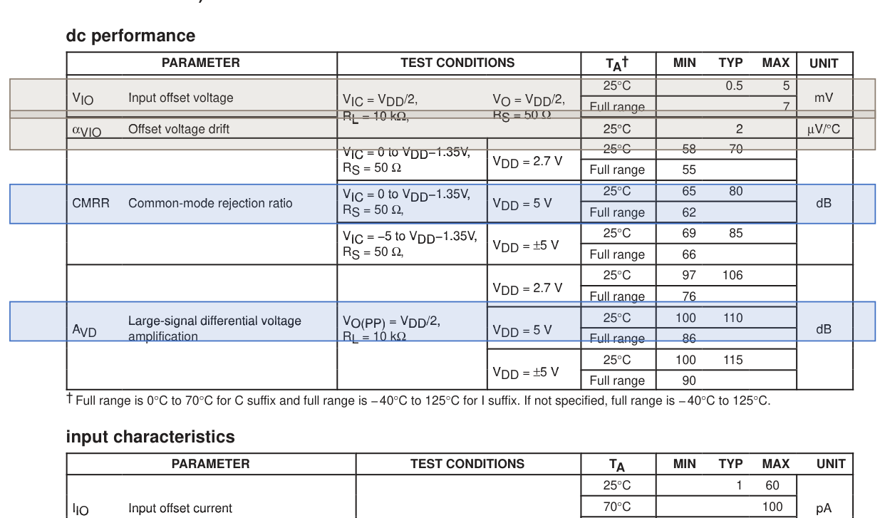

데이터시트에서 결과값까지의 설계 과정
상용 OP-Amp(TLV271)의 데이터시트를 목표로 삼아, 회로 구조를 고르고 소자 크기를 정한 뒤 시뮬레이션으로 검증하기까지 거친 과정을 순서대로 적었습니다. 2026년 10월 12일 기준의 실제 실행 기록입니다.
- 1 스펙 읽기
- →
- 2 측정 방법 준비
- →
- 3 구조 고르기
- →
- 4 크기 정하기
- →
- 5 검증 결과
한눈에 보기
데이터시트의 25개 항목 중 시뮬레이션으로 확인할 수 있는 15개를 설계 목표로 삼았습니다. 후보 구조 2개를 같은 조건으로 측정해 후보 2를 골랐고, 그 구조의 소자 크기를 LLM의 선택과 SymPy 계산으로 정했습니다. 시뮬레이션 결과를 보고 값을 고쳐 가며 4번째 시도에서 15개 목표를 모두 통과했습니다.
역할 분담
| 누가 | 무엇을 | 파일 |
|---|---|---|
| LLM | 정해진 범위 안에서 6가지 설계 값을 고르고 이유를 답함. 미달 항목을 보고 값을 고침 | llm_design.py |
| SymPy | 고른 값에서 식으로 소자 크기와 예상 성능을 계산 | sizing.py |
| ngspice | 공정 모델(GF180MCU)로 회로를 시뮬레이션 | run_sim.py, tb_opamp_*.cir |
| 판정 코드 | 측정값을 설계 목표와 비교해 통과·미달을 정함 | run_sim.py, spec_tlv271.json |
LLM 모델은 OpenRouter의 nvidia/nemotron-3-super-120b-a12b:free, 시뮬레이터는 ngspice 43, 공정은 GF180MCU의 6 V 소자입니다. 모든 측정은 대표 공정 조건(typical), 27°C 한 가지에서 했습니다.
데이터시트에서 설계 목표 추출
spec_tlv271.json)
조건은 전원 5 V 단일 전원, 25°C입니다. 지금은 표의 값을 사람이 손으로 옮겨 적었습니다. 데이터시트에서 자동으로 뽑는 부분은 다른 팀원이 맡고 있습니다.
합격 기준을 정한 방법
- 데이터시트에 최소값이나 최대값이 있으면 그 값을 그대로 씁니다 (9개).
- 대표값(typ)만 있으면 팀 기준을 씁니다. 클수록 좋은 항목은 대표값의 80% 이상, 작을수록 좋은 항목은 대표값의 120% 이하입니다 (6개).
- 시뮬레이션으로 잴 수 없거나 아직 측정을 만들지 않은 항목은 이유를 적고 판정에서 뺍니다 (10개).
설계 목표 15개
| 무엇을 보나 | 측정 조건 | 목표 | 근거 |
|---|---|---|---|
| 신호를 얼마나 키우나대신호 차동 전압이득 | 출력 진폭 VDD/2, 부하 10 kΩ | ≥ 100 dB | 데이터시트 |
| 두 입력에 함께 실린 잡음을 얼마나 걸러내나공통모드 제거비 (CMRR) | 공통 입력 0 ~ VDD − 1.35 V | ≥ 65 dB | 데이터시트 |
| 전원이 흔들려도 얼마나 버티나전원 제거비 (PSRR) | 전원 2.7 ~ 16 V, 무부하 | ≥ 70 dB | 데이터시트 |
| 전기를 얼마나 쓰나공급 전류 | 출력 VDD/2 | ≤ 660 µA | 데이터시트 |
| 얼마나 빠른 신호까지 다루나단위이득 대역폭 | 부하 2 kΩ, 10 pF | ≥ 2.4 MHz | 팀 기준 |
| 출력이 얼마나 빨리 변하나슬루율 | 출력 진폭 VDD/2, 부하 10 kΩ, 50 pF | ≥ 1.45 V/µs | 데이터시트 |
| 얼마나 안정적으로 동작하나위상여유 | 부하 2 kΩ, 10 pF | ≥ 52° | 팀 기준 |
| 안정성에 여유가 얼마나 있나이득여유 | 부하 2 kΩ, 10 pF | ≥ 14.4 dB | 팀 기준 |
| 출력이 얼마나 빨리 자리 잡나정착시간 (0.1%) | 1 V 계단, 이득 −1, 부하 2 kΩ, 47 pF | ≤ 2.4 µs | 팀 기준 |
| 가벼운 부하에서 출력을 얼마나 높이 올리나High 출력 전압 (1 mA) | 1 mA를 내보낼 때 | ≥ 4.9 V | 데이터시트 |
| 무거운 부하에서 출력을 얼마나 높이 올리나High 출력 전압 (5 mA) | 5 mA를 내보낼 때 | ≥ 4.6 V | 데이터시트 |
| 가벼운 부하에서 출력을 얼마나 낮게 내리나Low 출력 전압 (1 mA) | 1 mA를 받아들일 때 | ≤ 0.1 V | 데이터시트 |
| 무거운 부하에서 출력을 얼마나 낮게 내리나Low 출력 전압 (5 mA) | 5 mA를 받아들일 때 | ≤ 0.4 V | 데이터시트 |
| 전류를 얼마나 내보낼 수 있나출력 전류 (+레일에서 0.5 V) | 출력 VDD − 0.5 V | ≥ 5.6 mA | 팀 기준 |
| 전류를 얼마나 받아들일 수 있나출력 전류 (−레일에서 0.5 V) | 출력 0.5 V | ≥ 6.4 mA | 팀 기준 |
측정에서 제외한 10개
| 항목 | 제외한 이유 |
|---|---|
| 입력 오프셋 전압, 오프셋 온도 드리프트 | 소자 편차로 생기는 값이라 통계(Monte Carlo) 해석과 온도 스윕이 필요함. 아직 만들지 않음 |
| 입력 오프셋 전류, 입력 바이어스 전류, 차동 입력 저항 | MOS 입력이라 시뮬레이션에서는 0에 가깝게 나옴. 실제 값은 보호 소자의 누설이 정하므로 판정 의미가 없음 |
| 공통모드 입력 커패시턴스 | 패키지와 보호 소자의 기생 성분이 포함된 값이라 회로 넷리스트만으로 재현되지 않음 |
| 입력 잡음 전압 (1 kHz, 10 kHz), 입력 잡음 전류 | 아직 만들지 않음. 공정 모델로 잡음 해석이 가능하므로 추가 예정 |
| 전고조파 왜곡 + 잡음 | 아직 만들지 않음. 시간 해석과 주파수 분석이 필요함 |
측정 방법 준비 (테스트벤치)
tb_opamp_*.cir 5개와 run_sim.measure_opamp()회로 본체(.subckt opamp)와 테스트벤치를 따로 둡니다. 그래서 회로가 바뀌어도 같은 테스트벤치로 재므로 후보끼리, 회차끼리 공정하게 비교할 수 있습니다. 조건은 데이터시트의 조건을 그대로 따랐습니다.
| 테스트벤치 | 재는 항목 | 재는 방법 |
|---|---|---|
| 직류 tb_opamp_dc.cir | 이득, CMRR, PSRR, 공급 전류 | 출력을 원하는 전압에 맞추는 되먹임 회로(서보)를 걸고, 출력·공통 입력·전원을 움직일 때 입력 오프셋이 얼마나 변하는지로 계산. 공급 전류는 무부하, 출력 VDD/2에서 측정 |
| 주파수 응답 tb_opamp_ac.cir | 대역폭, 위상여유, 이득여유 | 큰 인덕터와 커패시터로 직류에서는 되먹임을 걸고 교류에서는 끊어 개방루프 응답을 측정. 이득이 0 dB가 되는 주파수와 그때의 위상, 위상이 −180°일 때의 이득을 읽음 |
| 슬루율 tb_opamp_slew.cir | 슬루율 | 이득 1 버퍼에 1 V ↔ 3.5 V 계단을 넣고 출력의 10% ~ 90% 구간 기울기를 계산. 오를 때와 내릴 때 중 느린 쪽을 사용 |
| 정착시간 tb_opamp_settle.cir | 정착시간 | 이득 −1 증폭기에 1 V 계단을 넣고 출력이 최종값의 ±0.1% 안에 들어와 머무는 시각을 측정 |
| 출력 구동 tb_opamp_drive.cir | High·Low 출력 전압, 출력 전류 | 두 입력을 0.5 V 벌려 출력을 한쪽 끝으로 몰고, 1 mA·5 mA 부하를 걸었을 때의 출력 전압과 레일에서 0.5 V 떨어진 지점의 전류를 측정 |
전원 제거비는 데이터시트 조건이 2.7 ~ 16 V이지만, 6 V 소자를 쓰기 때문에 2.7 ~ 5.5 V 구간만 쟀습니다.
후보 구조 비교와 선정
opamp_a.cir, opamp_b.cir)sim_out/selection.json)| 구조 | 트랜지스터 | 통과 | 결과 | |
|---|---|---|---|---|
| 후보 1 | PMOS 입력 폴디드 캐스코드 1단 + NMOS 공통소스 2단(class-A 출력) + Miller 보상 | 23개 | 12 / 15 | 탈락 |
| 후보 2 | PMOS 입력 폴디드 캐스코드 1단 + class-AB 출력단 + Miller 보상 | 31개 | 15 / 15 | 선정 |
후보 1이 미달한 항목
| 무엇을 보나 | 측정값 | 목표 |
|---|---|---|
| 가벼운 부하에서 출력을 얼마나 높이 올리나High 출력 전압 (1 mA) | −0.621 V | ≥ 4.9 V |
| 무거운 부하에서 출력을 얼마나 높이 올리나High 출력 전압 (5 mA) | −0.697 V | ≥ 4.6 V |
| 전류를 얼마나 내보낼 수 있나출력 전류 (+레일에서 0.5 V) | 0.285 mA | ≥ 5.6 mA |
후보 1은 출력을 위로 밀어 주는 쪽이 고정된 작은 전류원이라 부하가 전류를 요구하면 출력을 높이 유지하지 못합니다. 후보 2는 위·아래 출력 소자가 모두 필요한 만큼 전류를 내는 class-AB 출력단이어서 이 세 항목을 통과했습니다. 선정 규칙은 단순합니다. 판정한 목표를 모두 통과한 후보를 고릅니다.
위는 두 후보 회로를 미리 만들어 두고 시뮬레이션 결과로 고른 기록입니다. 10월 12일에 구조를 툴이 만드는 방식을 추가했습니다(아래).
구조를 툴이 만드는 방식 (AMSnet-KG 논문 방식, 10/12 추가)
- 블록 모음: 회로를 바이어스, 1단, 2단, 보상 블록으로 나눠 13개를 모아 두었습니다(
blocks/). 1단은 5종(폴디드 캐스코드 PMOS·NMOS 입력, 텔레스코픽 캐스코드, 차동쌍 + 전류 미러 부하 PMOS·NMOS 입력), 2단은 3종(class-A NMOS·PMOS, class-AB), 보상은 2종입니다. 블록마다 고를 때 쓰는 성질(이득이 높다, 입력 범위가 0 V를 포함한다 등)과 단자가 하는 일을 적어 두었습니다. - 설계 전략: LLM이 스펙을 보고 필요한 성질을 따진 뒤 [역할, 관계, 값] 쌍으로 적습니다. 예: [1단, 이득, 높음], [2단, 내보내는 전류, 큼].
- 블록 찾기와 조립: 코드가 쌍에 가장 잘 맞는 블록을 찾고, 단자가 하는 일을 맞춰 이어 넷리스트를 만듭니다. 함께 가질 수 없는 쌍이 섞여 있으면 성능 요구(입력 범위, 이득 등) 쪽을 따르고 어긋난 쌍을 기록합니다. 필요한 바이어스 회로는 자동으로 들어갑니다. 1단과 2단이 맞물리지 않는 조합이면 이유를 LLM에 돌려줍니다.
- 시뮬레이션과 다시 정하기: 같은 테스트벤치로 판정하고, 미달이면 실제 성능을 LLM에 돌려줘 다른 구조를 받습니다.
모음으로 만들 수 있는 조합은 50가지이고 그중 32가지가 조립됩니다. 32가지를 모두 시뮬레이션해 보면 15개를 다 통과하는 것은 "PMOS 입력 폴디드 캐스코드 1단 + class-AB 출력단 + Miller 보상" 두 가지(저항 유무)뿐입니다. 입력쌍만 NMOS로 바꾼 구조는 공통모드 제거비 하나가 미달(14개 통과)이고, 나머지는 2~12개 통과입니다.
LLM으로 4번 실행했고 4번 모두 15개를 통과하는 구조에 도달했습니다. 3번은 첫 제안에서 통과했고, 1번은 첫 구조(class-A 출력, 12개 통과)가 미달이어서 결과를 돌려받은 뒤 두 번째 제안에서 통과했습니다. 조립한 회로는 손으로 만든 후보 2와 소자가 같습니다.
LLM의 답에는 틀린 부분이 있었습니다. 4번 중 3번에서 "NMOS 입력쌍"과 "입력 범위가 0 V를 포함"을 함께 적었는데, 이 둘은 함께 가질 수 없습니다. 블록 찾기 규칙이 성능 요구 쪽을 따라 PMOS 입력 블록을 골랐기 때문에 통과한 것입니다. LLM 혼자 맞힌 것이 아니라 "LLM의 요구 정리 + 코드의 블록 찾기"가 함께 낸 결과입니다.
블록 안의 소자 크기는 미리 정해 둔 값입니다. 논문은 조립 뒤에 최적화로 크기를 다시 정하지만, 여기서는 4단계의 크기 결정 루프가 그 일을 맡고, 아직 "폴디드 캐스코드 + class-AB" 구조에만 동작합니다. 실행: llm_topology.py, 기록: sim_out/topology_log.json.
소자 크기 결정과 반복 개선
opamp_b.template)와 설계 목표 15개opamp_llm.cir와 전체 이력 sim_out/design_log.json한 회차의 순서
- LLM이 6가지 값을 고릅니다. 허용 범위는 코드가 정해 주고, LLM은 값과 값마다의 이유를 JSON으로 답합니다. 범위를 벗어난 값은 코드가 범위 안으로 맞춥니다.
- SymPy가 소자 크기를 계산합니다. 공정의 트랜지스터 특성표(
devices_gf180.json, 효율 gm/ID별 전류밀도와 이득)를 읽어 아래 식을 풉니다. 폭이 50 µm를 넘는 소자는 같은 소자 여러 개로 나눕니다. - 회로 파일을 만듭니다. 구조 틀의 빈칸에 계산된 크기를 채웁니다.
- 시뮬레이션하고 판정합니다. 2단계의 테스트벤치 5종을 그대로 씁니다.
- 미달 항목을 LLM에 돌려줍니다. 이전 선택, 측정값, 미달 항목과 차이를 함께 넘기고 다시 1번으로 갑니다.
LLM이 고르는 6가지 값
| 값 | 정확한 뜻 | 허용 범위 |
|---|---|---|
| 입력단에 흘리는 전류 | 입력단 꼬리 전류 | 20, 40, 60, 80 µA |
| 입력 트랜지스터의 효율 | 입력 트랜지스터의 gm/ID | 8 ~ 18 1/V |
| 입력 트랜지스터의 길이 | 채널 길이 | 0.7, 1, 2, 4 µm |
| 이득을 높이는 보조 트랜지스터의 길이 | 캐스코드 트랜지스터의 채널 길이 | 1, 2, 4 µm |
| 안정화용 커패시터 | Miller 보상 커패시터 하나의 값 (위·아래 2개) | 1 ~ 8 pF |
| 출력단에 평소 흘리는 전류 | 출력단 대기 전류 | 80 ~ 300 µA |
계산에 쓰는 식
| 구하는 것 | 식 |
|---|---|
| 입력 트랜지스터 폭 | I_tail / 2 = J_in × W_in / L_in (전류 = 전류밀도 × 폭/길이) |
| 1단 이득 | 입력 gm × (위쪽과 아래쪽 출력 저항의 병렬) |
| 2단 이득 | 출력 소자 gm의 합 ÷ (출력 컨덕턴스 + 1/부하 저항) |
| 단위이득 대역폭 | I_tail × gm/ID ÷ (8π × C_c) |
| 슬루율 | I_tail ÷ (2 × C_c) |
회차별 기록
| 회차 | 바꾼 값 | 통과 | 미달 항목 (측정값 / 목표) |
|---|---|---|---|
| 1 | 처음 고른 값: 입력단 전류 80 µA, 효율 18, 입력 길이 4 µm, 보조 길이 4 µm, 커패시터 8 pF, 출력단 전류 300 µA | 13 / 15 | 이득여유 13.26 dB / ≥ 14.4 dB 정착시간 2.50 µs / ≤ 2.4 µs |
| 2 | 커패시터 8 → 6 pF | 12 / 15 | 위상여유 49.75° / ≥ 52° 이득여유 10.19 dB / ≥ 14.4 dB 정착시간 3.30 µs / ≤ 2.4 µs |
| 3 | 입력단 전류 80 → 60 µA, 커패시터 6 → 8 pF, 출력단 전류 300 → 200 µA | 14 / 15 | 이득여유 14.21 dB / ≥ 14.4 dB |
| 4 | 입력단 전류 60 → 40 µA | 15 / 15 | 모두 통과 |
2회차에서는 정착시간을 줄이려고 커패시터를 줄였다가 안정성이 더 나빠졌습니다. 3회차에서 커패시터를 되돌리고 전류를 줄이는 쪽으로 방향을 바꿨고, 4회차에서 입력단 전류를 한 번 더 줄여 통과했습니다.
식으로 계산한 값과 시뮬레이션 측정값 (4회차)
| 항목 | 계산 | 측정 | 차이 |
|---|---|---|---|
| 전압이득 | 127.4 dB | 128.1 dB | +0.7 dB |
| 단위이득 대역폭 | 3.58 MHz | 3.66 MHz | +2% |
| 슬루율 | 2.50 V/µs | 2.26 V/µs | −10% |
| 공급 전류 | 342 µA | 462 µA | +35% |
이득과 대역폭은 식이 잘 맞습니다. 공급 전류는 식이 실제보다 작게 나옵니다. 기준 전류가 설계값 10 µA보다 크게 흐르는 것(약 11.6 µA)이 원인 중 하나로 확인되었고, 식을 보완해야 합니다.
최종 설계의 항목별 검증
opamp_llm.cir (트랜지스터 31개)sim_out/opamp_llm_result.json)| 무엇을 보나 | 측정값 | 목표 | 여유 | 판정 |
|---|---|---|---|---|
| 신호를 얼마나 키우나대신호 차동 전압이득 | 128.1 dB | ≥ 100 dB | +28.1 dB | 통과 |
| 두 입력에 함께 실린 잡음을 얼마나 걸러내나공통모드 제거비 | 115.6 dB | ≥ 65 dB | +50.6 dB | 통과 |
| 전원이 흔들려도 얼마나 버티나전원 제거비 | 80.1 dB | ≥ 70 dB | +10.1 dB | 통과 |
| 전기를 얼마나 쓰나공급 전류 | 462.2 µA | ≤ 660 µA | 30% 남음 | 통과 |
| 얼마나 빠른 신호까지 다루나단위이득 대역폭 | 3.657 MHz | ≥ 2.4 MHz | +52% | 통과 |
| 출력이 얼마나 빨리 변하나슬루율 | 2.26 V/µs | ≥ 1.45 V/µs | +56% | 통과 |
| 얼마나 안정적으로 동작하나위상여유 | 78.0° | ≥ 52° | +26.0° | 통과 |
| 안정성에 여유가 얼마나 있나이득여유 | 17.33 dB | ≥ 14.4 dB | +2.9 dB | 통과 |
| 출력이 얼마나 빨리 자리 잡나정착시간 (0.1%) | 0.94 µs | ≤ 2.4 µs | 61% 남음 | 통과 |
| 가벼운 부하에서 출력을 얼마나 높이 올리나High 출력 전압 (1 mA) | 4.958 V | ≥ 4.9 V | +1% | 통과 |
| 무거운 부하에서 출력을 얼마나 높이 올리나High 출력 전압 (5 mA) | 4.781 V | ≥ 4.6 V | +4% | 통과 |
| 가벼운 부하에서 출력을 얼마나 낮게 내리나Low 출력 전압 (1 mA) | 0.018 V | ≤ 0.1 V | 82% 남음 | 통과 |
| 무거운 부하에서 출력을 얼마나 낮게 내리나Low 출력 전압 (5 mA) | 0.092 V | ≤ 0.4 V | 77% 남음 | 통과 |
| 전류를 얼마나 내보낼 수 있나출력 전류 (+레일에서 0.5 V) | 10.75 mA | ≥ 5.6 mA | +92% | 통과 |
| 전류를 얼마나 받아들일 수 있나출력 전류 (−레일에서 0.5 V) | 23.89 mA | ≥ 6.4 mA | +273% | 통과 |
이 결과를 읽을 때 알아 둘 점
- 15개 통과가 데이터시트 전체를 만족한다는 뜻은 아닙니다. 25개 중 10개는 아직 측정하지 않았고, 6개는 데이터시트 보장값이 아니라 팀 기준으로 판정했습니다.
- 한 가지 조건에서만 확인했습니다. 대표 공정 조건, 27°C입니다. 공정 편차와 온도 범위는 확인하지 않았습니다.
- 크기에 대한 기준이 없습니다. LLM이 이득을 최대로 하는 쪽을 골라 입력 트랜지스터의 폭 합계가 약 4 mm(49.5 µm × 80개)로 지나치게 큽니다. 면적 기준을 넣고, 통과한 뒤 줄이는 단계가 필요합니다.
- 회로 안의 저항과 커패시터는 이상적인 소자입니다. 공정의 실제 소자로 바꾸면 값이 달라질 수 있습니다.
- 전원 제거비는 2.7 ~ 5.5 V 구간만 쟀습니다. 2.7 V에서는 출력단 바이어스의 여유가 0.12 V로 작습니다.
- 레이아웃과 그에 따른 기생 성분은 이 과제의 범위 밖입니다.
같은 결과를 다시 만드는 방법
WSL의 프로젝트 폴더에서 아래 순서로 실행합니다. LLM의 답은 실행할 때마다 달라질 수 있어 회차 수와 값이 위와 다르게 나올 수 있습니다.
~/.venvs/edai/bin/python run_sim.py opamp_a opamp_b --select: 후보 측정과 선정~/.venvs/edai/bin/python llm_design.py: 크기 결정 반복 (opamp_llm.cir와design_log.json을 덮어씁니다)~/.venvs/edai/bin/python ui_demo.py: 화면으로 보기 (http://localhost:8080)